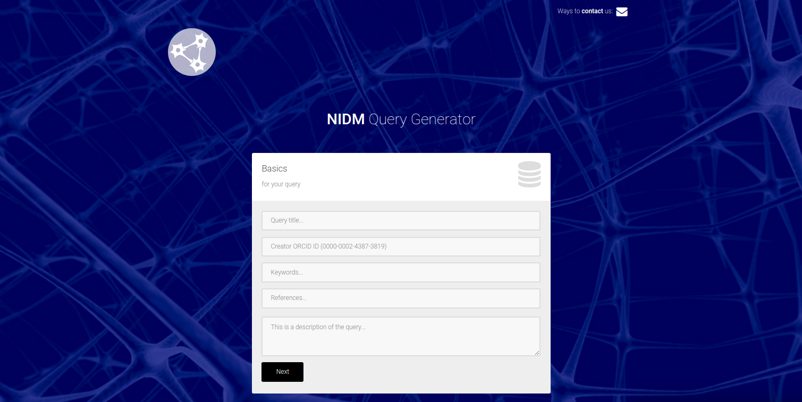
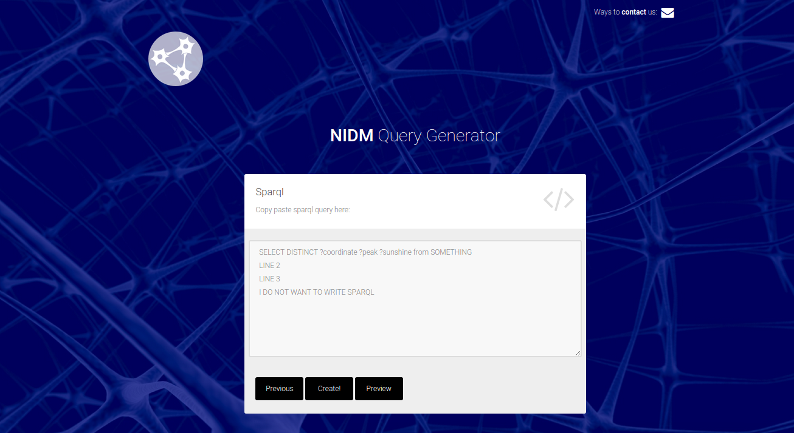
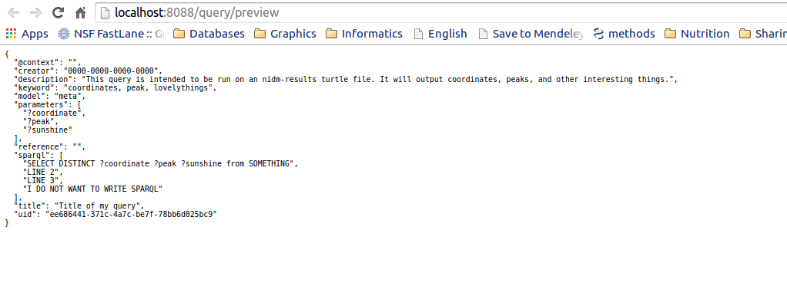
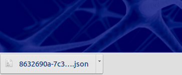
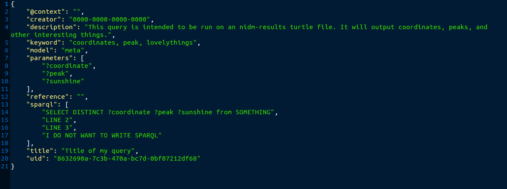

Development¶
How do I contribute a new query?¶
We have a dynamic web interface that will allow you to generate, preview (and eventually test) a new data structure for adding to nidm-query. This can also be done, using the same functions, programatically. You can then add it to the repo by submitting a pull request to add it. A pull request affords group discussion, and we will eventually have continuous integration that will run tests on your new query. We recommend that you use the generation functions to ensure accuracy in the format and fields of your data structure.
Web Query Generator¶
To generate a query with the interactive web interface, first start up the nidm application
nidm
Then open your browser to localhost:8088/query/new. You will be presented with fields to fill in for your query:
- title: This should be a single sentence that describes what your query does, what object model it is associated with, etc.
- creator: We ask for your ORCID ID to be filled into the creator spot. If you don’t have this, you can put a name or email. We are currently not validating this, so you can really do whatever you like. We will (hopefully) decide on a standard.
- description: This should be a text description of your query, please give details. The title and description will eventually be provided in a static web interface served with the repo for people to search and find queries they want to use.
When you click next, the next page is where you should copy paste your sparql:
If you are not ready to generate your file, you can click “Preview” for a new tab to open with the query. The parameters that the user is allowed to ask for will be extracted from your “select” line, indicated by a word preceded with ? (e.g., ?hello). Do not worry about capitalization.
When you are ready to save your query, click “Create!”
A file will be downloaded to your computer. You should drop this file into the appropriate directory in your nidm-query. repo and submit a PR to add it to the nidm-api. We will eventually have tests for the queries, and an interactive web interface hosted with the nidm-api to explore the queries available (before downloading the nidm-api).
You can then download to your local machine:
How do I develop the API?¶
You will want to fork the repo, clone the fork, and then run the flask application directly (so that it updates with changes to your code):
git clone https://github.com/[username]/nidm-api
cd nidm-api
python setup.py install --user
python nidm/app.py
How does this work?¶
Flask is a web framework (in python) that makes it ridiculously easy to do stuff with python in the browser. You can conceptually think of it like Django released wild and free from its mom’s minivan. If you look at app.py, you will see a bunch of functions that return different views, and each view is associated with a particular url (with variables) that the user might want. You should first familiarize yourself with flask before trying to develop with it.
Queries vs. API¶
The queries are kept separate from the api itself, in the nidm-query repo. We did this because the world of writing sparql, and developing a web framework / API to serve the queries, are two separate things. A developer writing queries should be able to submit a PR to add a single file to the nidm-queries repo without needing to know about the nidm-api infrastructure. A developer working on the API shouldn’t need to worry about the sparql side of things.
Application Logic¶
The basic application logic is as follows:
- The user installs the application with pip. This installs the python modules to the user’s site-packages, but it also adds an executable, “nidm” to the users bin. This exectuable can be run to start the server instantly.
- Upon the creation of the server, the nidm-queries repo is downloaded to a temporary directory. This ensures that queries are up to date at the start of the server. If you are using the functions from within your application, you can download the repo to a location of your choice and specify the location in your application.
- The queries are json (ld) files. This just means they have a key called @context with some kind of stuff that semantic web folk understand. We are showing them as standard .json files because the .jsonld extension is not widely known, and could be confusing.
- The tool reads in all queries, and presents valid queries to the user at the base url of the server, localhost:8088. (Note that validation is not currently implemented). The user can select a query of choice based on the unique id, the “uid” variable in the json structure presented at localhost:8088.
- The user can then look at the details for a query by way of locahost:8088/api/[qid], or perform a query on a ttl file with localhost:8088/api/query/[qid]?ttl=[ttl_file]. The [ttl_file] can be a local path, or a URL. This is the extent of the tool thus far, it is still under development.
Serving an API and web interfaces¶
The url /api/[more-stuff-here] is linked up to serve a RESTful API, however the beauty of flask is that we can configure other URLs to do other interesting things. For example, /create might bring up an interactive web interface to write inputs to generate a new query object. /api/visual may be configured to return an interactive d3 or neo4j version of some part of the graph extracted from your ttl file. Having python and the infinite amount of web visualization technology at our fingertips makes the options really unlimited.